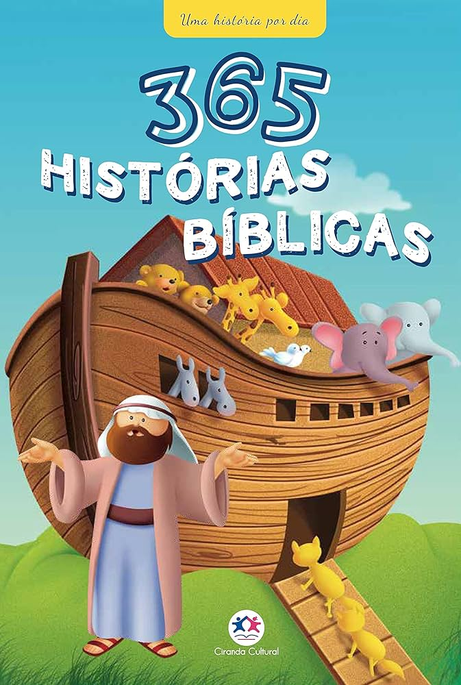
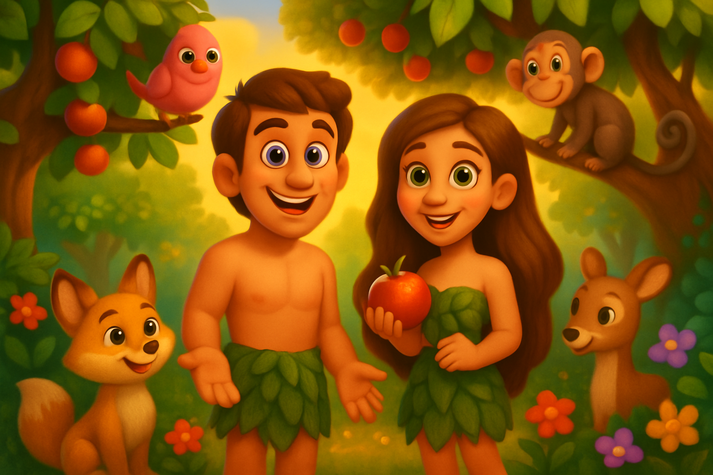
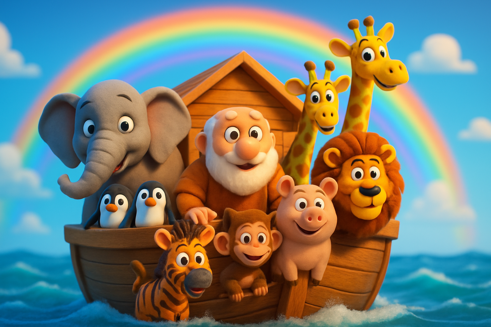
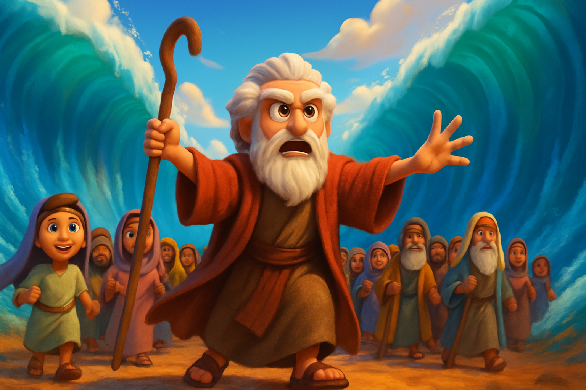
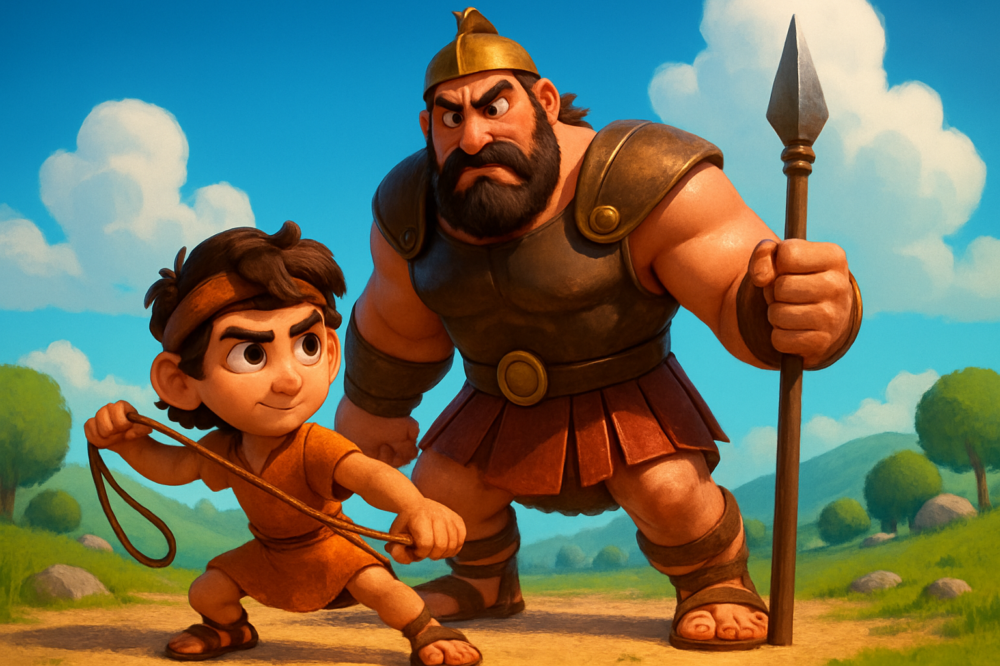
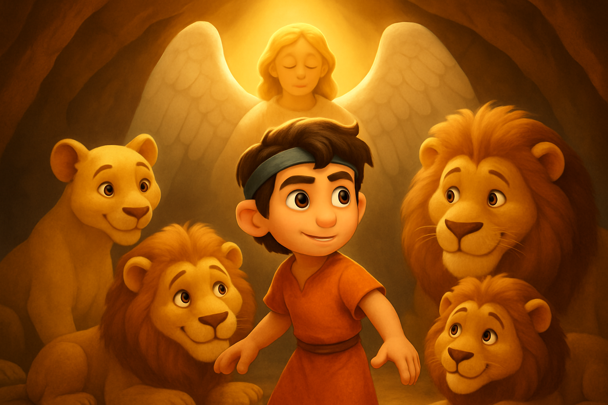
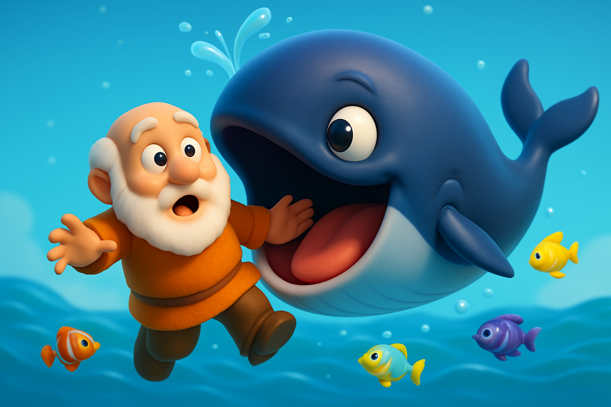
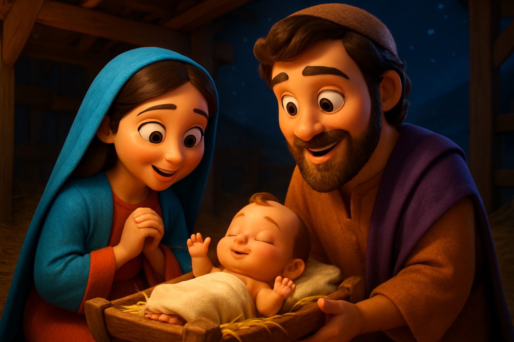
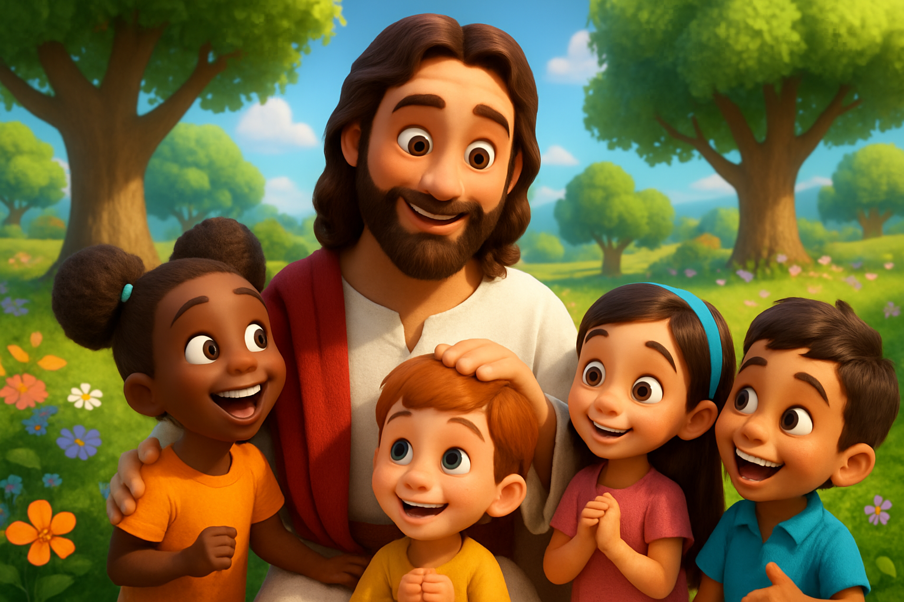
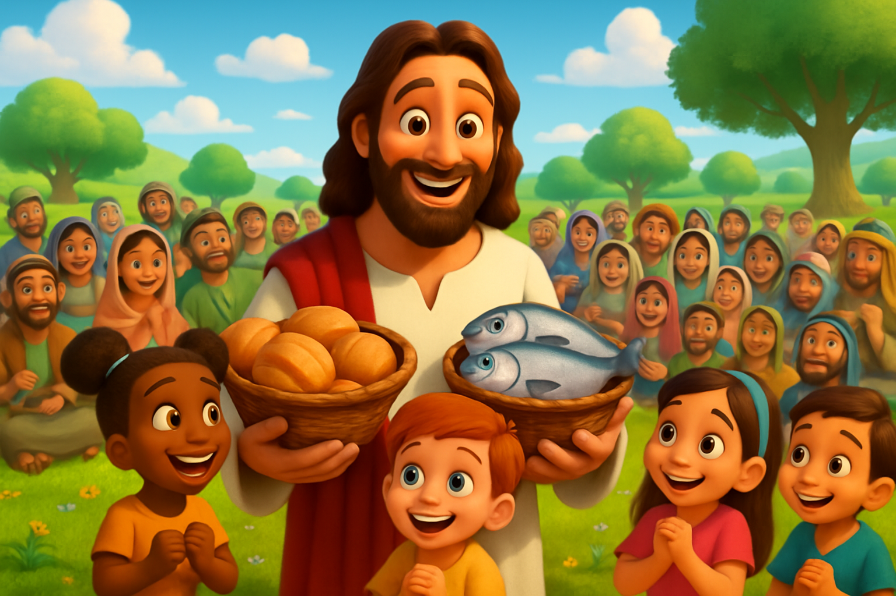

📱 Compartilhe com sua Família e Amigos
Ajude outras famílias a conhecer as histórias bíblicas! Compartilhe o Bíblia Flix nas redes sociais.
📲 Escaneie o QR Code
Ou copie o link:
Descubra as mais belas histórias da Bíblia em animações coloridas e narrações especiais para crianças

"Até aqui nos ajudou o Senhor" - 1 Samuel 7:12

A criação do primeiro homem e da primeira mulher por Deus
8 min Gênesis
Noé constrói uma grande arca para salvar os animais do dilúvio
10 min GênesisA história do jovem José e sua túnica de muitas cores
11 min Gênesis
Como Deus abriu o mar para salvar seu povo do Egito
8 min Êxodo
Como um pequeno pastor venceu o gigante filisteu com fé em Deus
7 min 1 Samuel
Daniel é protegido por Deus por causa de sua fé inabalável
9 min Daniel
Jonas aprende sobre obediência a Deus e perdão
7 min Jonas
A história mais linda: o nascimento do Salvador em Belém
9 min Lucas
Jesus mostra seu amor especial pelas crianças
6 min Marcos
Jesus alimenta cinco mil pessoas com apenas cinco pães e dois peixes
8 min JoãoNenhuma história favoritada ainda. Clique no coração para adicionar!
Desenhos para imprimir e colorir com as crianças
Ajude outras famílias a conhecer as histórias bíblicas! Compartilhe o Bíblia Flix nas redes sociais.
Ou copie o link:
Sua opinião é importante para melhorar este projeto!
Se este projeto abençoa sua família e seus filhos, você pode apoiar para que ele continue gratuito e alcance mais crianças.
"Mais bem-aventurado é dar do que receber." - Atos 20:35
Chave PIX: